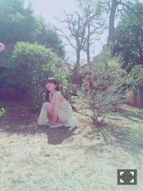

| 2015/08 07 Fri | ひめたん-0o0-その563 |
真夏の全国ツアー始まりました！！
初日、2日目
仙台公演終わったよ～
ありがとうございました(´,,•ω•,,｀)
仙台は1年ぶりということで
去年からパワーアップした私たちを
見てもらえたら嬉しいです( ˇωˇ )
良いスタートの公演になりました！
ありがとう仙台！ありがとう東北！
また絶対帰ってきます！
もっともっと大きくなって！
初日の公演で言ったけれど
まだ報告してなかったね
私、この夏が終わったら
ツインテールやめることにしました
本気だよ⌒°( ･ω･ )°⌒
だってみんなツイン否定するんだもん
ツイン好きとしては悲しいよ。笑
これを機にツイン支持率上昇しますように。
個握では色々と遊ぶので
ツイン派の人は楽しみにしててね♡
次何しよっかな～
このビッグニュース、もちろん
メンバーのみんなにも
すんごいびっくりされたんだけどさ
1日目ツインテールで
2日目サイドポニーしたらね
「今日のひめたん可愛いね」って
1日目はなんも言われなかったのに
2日目はみんなに褒められたよ
ほらやっぱり。ほらほら。
ツアーTシャツ宮城会場限定ver.
今回も会場ごとにデザインの違う
Tシャツを作ってもらいました！
ケータリングスペースには
東北の名物をたくさん用意していただいて
会場の中にいながら旅行気分でした♪
次は愛知です！
もうすぐだね！ガイシホール！
早く会いたいよ～＊
よくお世話になってる薬局のおねーさんに
これからお仕事で名古屋
行ってくるんです～って言ったら
名古屋！暑いみたいよ！って！！
水分補給もしっかりね（＾ω＾）
一緒に盛り上がりましょーう！
朝日新聞デジタルさんに
取材していただいた記事が
公開されました～♪
乃木坂に入る前のこととか、
将来のこととか、
いろんなことお話してます(´｡･v･｡｀)
TopYell発売になりました～♡
こちらもぜひチェックしてみてね
新連載！！
さらに告知。
8/12発売のEX大衆最新号で
あすかりんと2人でお話しました～＊

最後に少しだけ。
8月6日は
私たち広島県民にとって大切な日。
一昨年は写真集の撮影、今年はツアーと
乃木坂に入ってからいろんな形で
この日この瞬間を迎えていますが
東京に来て何年経っても
ずっと忘れることはありません。
今アイドルとしてステージに立てるのも
こうしてみなさんとお話できるのも
私にとってすごく幸せなことで、
でも当たり前なことじゃないんだよね。
みなさんとの出会いに感謝、
日々の平和に感謝です。
広島凱旋楽しみだよ！

(＊´・ω・＊)
コメント(913)
2015/08/07 23:36